Wine Review and Recommendation
Introduction
This report uses the a wine reviews dataset from Kaggle. The dataset was scraped from WineEnthusiast, a wine review website. It contains 129971 observations, each corresponding to a certain wine and its ratings/points, and features including name, geographic information, variety, price and text review. The report has two goals: 1. to predict the rating of wines using other features; 2. to recommend 5 different wineries for a certain customer. For the first object, this report uses text mining and two machine learning models; for the recommendation, the analysis is built based on similarity measurement. Details are discussed in part3 and part4 respectively.
Descriptive Analysis
Variables
Below is a descriptive table of variables in the dataset:
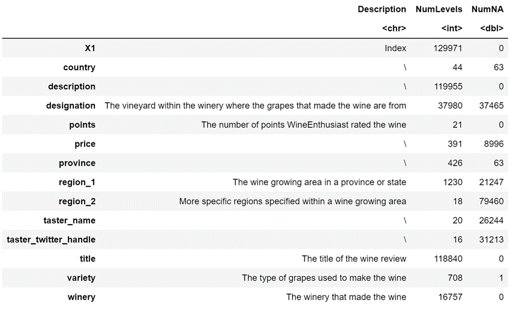This implies to us that we need to take care of variables that has too many levels (like winery), and to find a way to deal with NA values in the dataset.
Points
Since points is our response variable in the regression part, we are certainly interest in its distribution. From the left plot we can notice that the all points are greater or equal than 80. Also, the points are not continuous, instead distributed stepwise to only 21 levels. But doing a classification would be too complex, so I’ll use regression methods.
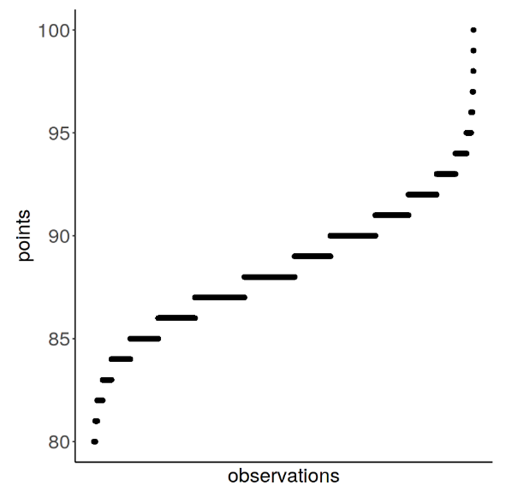Predicting Wine Scores
Data Preprocessing – Description
For description data, what I do is separating them into separated words, counting their frequencies, and generate a matrix. Here is a simple example:
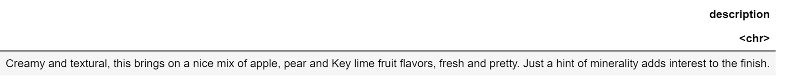Using tm package in R, we get a matrix showing how frequently words are appearing in this piece of description:
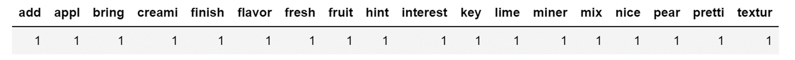I choose not to do SVD in order to keep the results interpretable, and keep 1800 words (columns) for the text matrix.
Data Preprocessing – Other Features
Our first task is to clean the dataset and transform the variables. My steps are:
- Drop: X1, country, region_2, taster_twitter_handle, title, points.
- Extract region, year from title.
- Keep regions in region, variety, winery from top-10 lists searched from Google.
- Replace NA values in categorical variables by “Others”, and replace NA values in numerical variables by median values.
Model 1 – Ridge Regression
1. Introduction
In this part, I use ridge regression to predict the points (response variable). Ridge is a penalized version of linear regression that optimize:
λ is the shrinkage parameter of coefficients.
2. Modeling
In order to fit this linear regression, I first convert all categorical variables to 0-1 variables. The model matrix then has 129971 rows and 2241 columns. Dataset was split into training data and testing data at 7:3. Fittings and 10-fold cross validations are performed on training data, and prediction and evaluating are performed on testing data.
Two λ values are suggested by 10-fold cross validation: lambda.min that gives the minimum validating MSE and lambda.1se that is one standard diviation larger than lambda.min.
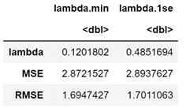3. Results
The lambda.min is quite small, because our model matrix contains limited information. There’s no huge difference between model with lambda.min and model with lambda.1se. Since lambda.1se provides stronger shrinkage and thus reduce the risk of overfitting, I will use lambda.1se. And left is a line plot showing true points v.s. predicted points. The prediction is more precise for points in the middle, and runs deviated at both boundaries.
Though ridge is a good model for prediction, it does’t supply a direct way for us to find which features are crutial in prediction. So I will do another regression method that can give us what we need, the LightGBM model.
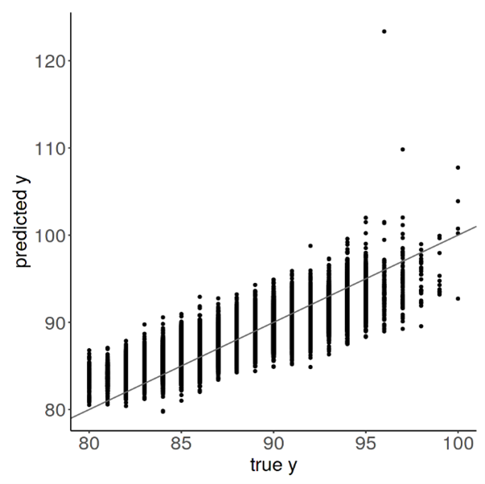Model 2 – Light GBM
1. Introduction
Light GBM is an efficient gradient tree boosting method. It uses subsampling and bagging methods to reduce computational cost, and let trees grow in a best-first order at each splitting step. Besides, by doing lightGBM we don’t need to convert categorical variables to dummy variables, thus the results are interpretable.
2. Modeling
First step is data preprocessing, which is similar to what I did in Ridge, except for that category variables are encoded to numerical factors.
I will keep most parameters as default, set learning_rate = 0.2, nrounds = 300 (common choices), and tune the key parameter num_leaves according to test MSE. The tuning results can be seen in the left table. I pick num_leaves = 32 finally, because it significantly reduces the error and it’s the quicker one among all that fit well.
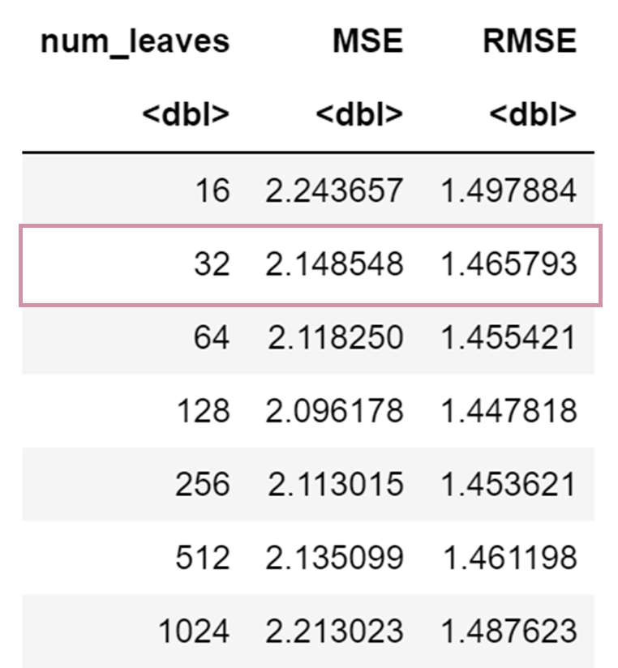3. Results
The LightGBM algorithm measures variables’ total gain of splitting for us. Here I plot the top 9 variables. We can see that price is the leading component for predicting wines’ points, not surprising because we all know expensive wines are better. Region and winery (actually containing similar geographical information) are also important variables. We also see two text variables in our top 9 list: rich and complex (and they are sort of synonymous). That means a wine that has richer, more complex taste will gain higher ratings from tasters.
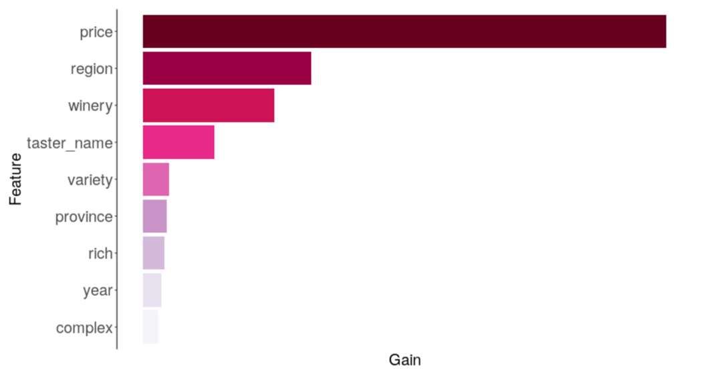Winery Recommendation
In this part, we are going to recommend 5 wineries to our imaginary customer (Let's call him Bob). Here are Bob's preferences:
- Variety: Pinot Noir
- Price: less than 20 dollars
- Has a fruity taste
I think the preference on taste is fixed and strong, while variety and price are more flexible preferences. If the taste is satisfied, why would Bob mind paying a little bit more for a different type of wine? So, in this part what I’m going to do is, first recommend N wines that matches the preferences (fruity, but may have prices higher than 20 or from another variety), and recommend wineries according to those wines.
Find a “Previous Purchase” Wine for Bob
In order to find wines that Bob may like, we need to first find a reference, or an imaginary purchasing history of Bob. Here I pick the wine with highest points among all wines that satisfy the three preference simultaneously. What I pick is a rosado (a very fruity type of wine).
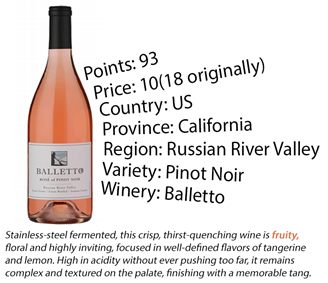Find Wines Similar to “Previous Purchase”
Here I use a Gaussian distance to measure the similarity between the “previous purchase” and all other fruity wines (not limited by variety and price).
In order to match the other two preferences of Bob, when calculating the similarity, I will pay more attention to price and variety by lifting up their weights (or narrowing corresponding σ_k^2). Also, I modify the price of the “previous purchase” to a lower level. Here’s a table showing our “previous purchase” wine and top 5 similar wines (There are 209 similar wines in total).
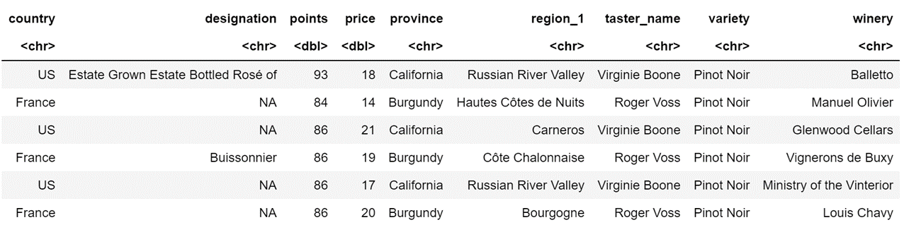Recommend Wineries
From all 209 recommending wines, I pick 4 wineries that appear most frequently and 1 winery that have highest average score:
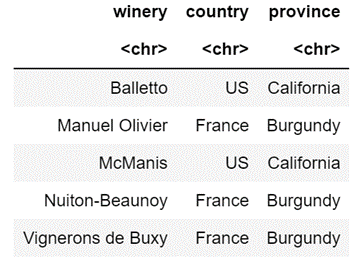- Most frequent: Vignerons de Buxy , Manuel Olivier, McManis, Nuiton-Beaunoy
- Highest score: Balletto
The result is quite interesting. Recommended wineries come from two provinces: Burgundy in France and California in US. This may indicate a combined effect, that wineries close to each other geographically together do better in producing a certain type of wine.